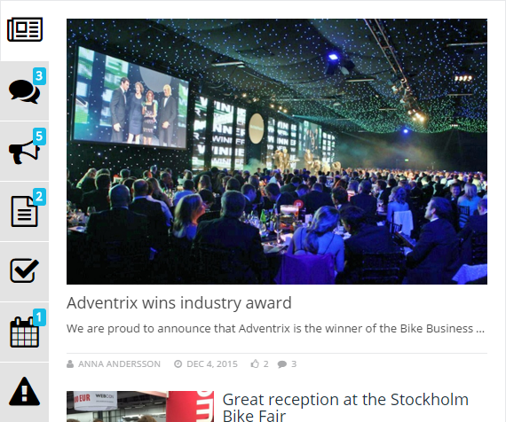

The notification panel is a concept in Omnia Intranet mainly used on the start page. The purpose is to help the end user to find out what information has been updated within different areas of the portal.

The following Omnia controls are related to the notification panel: